Overview
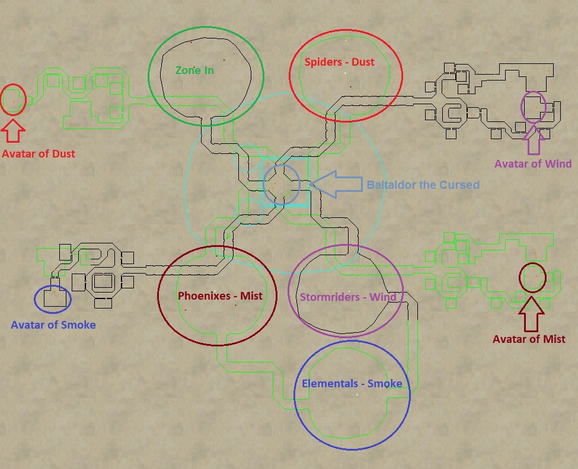
There are a total of 4 ring events in Plane of Air. At the end of each event an “Avatar” spawns.
Use the map above to correlate the ring events to their respective Avatar. They are in the following order:
- Stormrider Ring Event – Spawns Avatar of Wind
- Elemental Ring Event – Spawns Avatar of Smoke
- Phoenix Ring Event – Spawns Avatar of Mist
- Spider Ring Event – Spawns Avatar of Dust
Baltaldor
Before you reach any event you’ll come across the small boss Baltaldor the Cursed. Be careful when pulling him because he’s packed in tight with some trash mobs. He’s trivial with a full raid force.
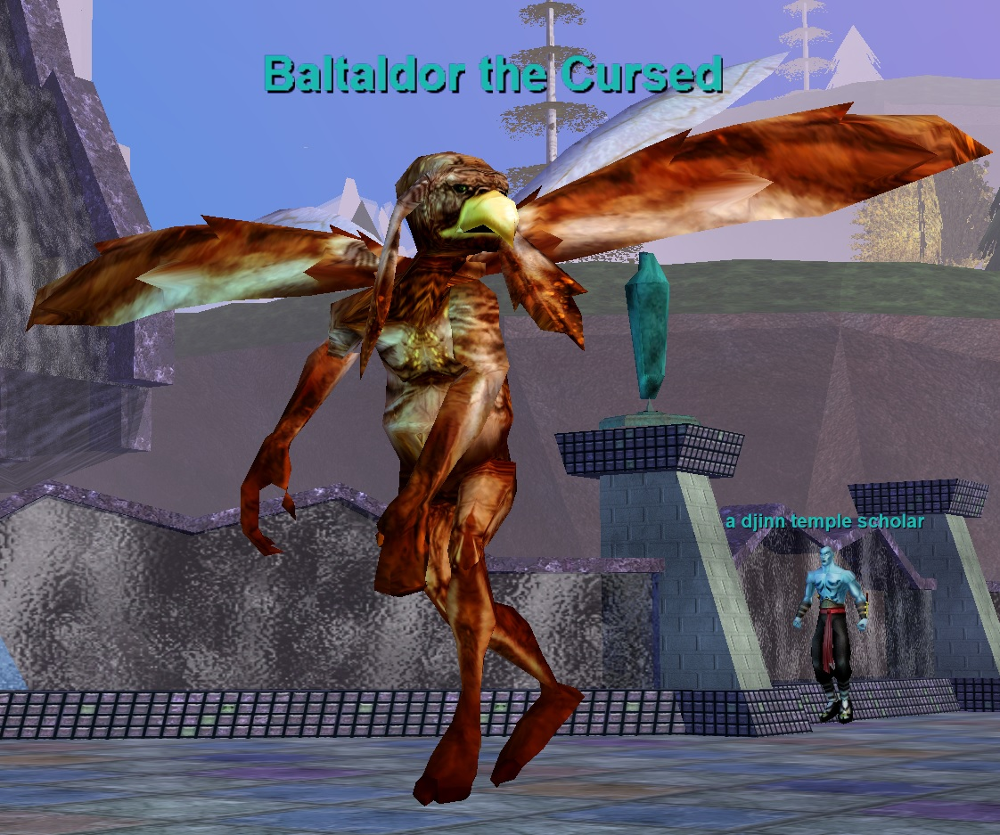
Fight Info
- Hits 349–1462 (PQDI; eqprogression estimated 1800+)
- 265,000 HP (PQDI; eqprogression estimated 300K)
- Slowable
- AE Rampages
- Casts self Memory Blur (drops aggro)
- Casts Diseased Cloud (Targeted AE, 55% Slow/1250 DD, -150 Disease Based, 9 disease counter)
- Casts Hail Storm (PBAE, 400 DD + 1 second stun. Magic Based)
| Level | 67 |
|---|---|
| HP | 265,000 |
| Hits | 349 - 1462 |
| Resistances | MR 100 / CR 90 / FR 90 / DR 60 / PR 60 |
| Special Abilities | Summon, Enrage, Area Rampage, Dual Wield, Do Not Equip, Magical Attack, Unmezzable, Uncharmable, Unsnarable, Immune to fleeing, Immune to melee except magical, Immune to lull effects, NO LOITERING |
| Can Cast | Diseased Cloud |
| Procs | Hail Storm |
Cross-referenced from pqdi.cc (Project Quarm Database Interface)
Ring Events
Stormrider Ring Event
- Clear all the mobs on the island.
- Once the island is clear a script starts and some stormriders spawn in a formation in front of Stormrider Priest of Destruction. The stormriders will become attackable in waves of 2. Once all are dead you can then kill Stormrider Priest of Destruction. It is pretty easy and has about 150K HP.
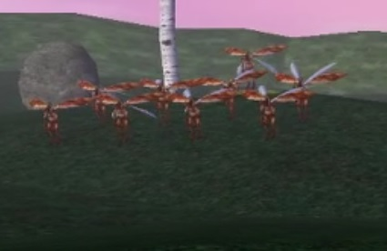
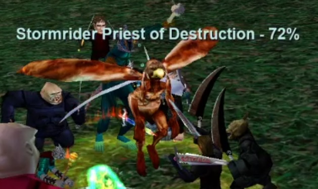
- Some time will go by (5-10 minutes). You may see a mob spawn every now and then during this time. Just kill them as they pop.
- Eventually the final wave of mobs will spawn along with the rings final boss: Pherlondien Clawpike. Kill all the trash (also called Pherlondien Clawpike, but are lower level) and higher level Pherlondien Clawpike to spawn Avatar of Wind.
You’ll see the emote: Avatar of Wind shouts, ‘I’ll make sure that no mortal is allowed to defile this sacred realm!’
Pherlondien Clawpike fight Info:
- 500K HP
- Hits 2K+
- Slowable
- AE Rampage
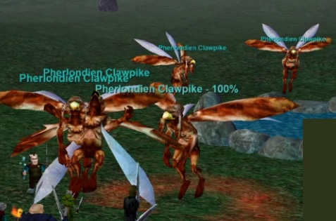
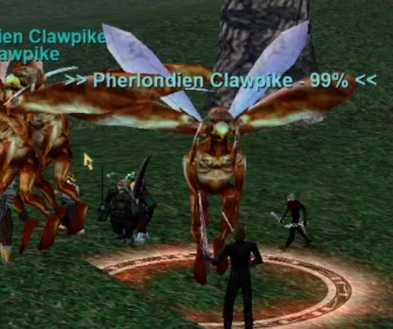
Elemental Ring Event
- Clear all the mobs on the island.
- When the last mob dies 4x an elemental champion spawn. Kill them. They hit for around 1,000. Somewhere around 100K-200K HP each. Slowable. My parse on the champions seems off for HP.
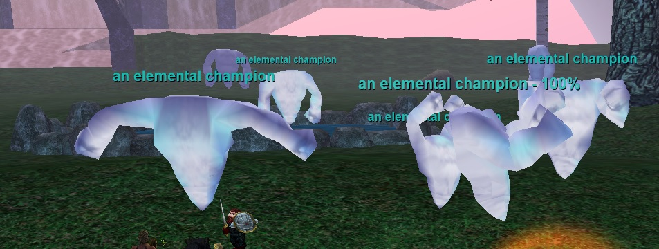
- When the last an elemental champion dies, The Elemental Masterpiece spawns. Kill it to spawn Avatar of Smoke.
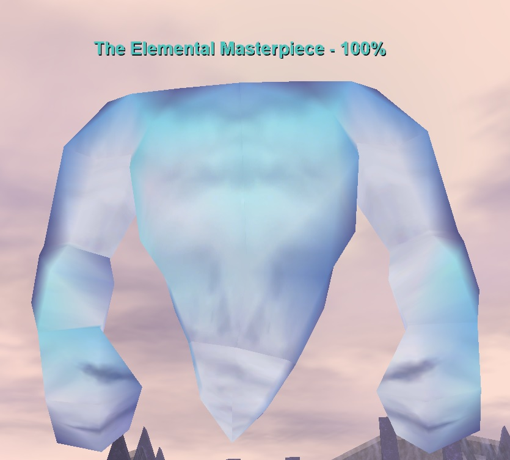
You’ll see the emote: Avatar of Smoke shouts, ‘The time has come for all intruders to be tested! I will not allow you to pillage this plane any longer!’
The Elemental Masterpiece fight info:
- 600K HP
- Hits 2100+
- Slowable
- Rampages
Phoenix Ring Event
- Clear all the mobs on the island. Calebgrothiel may also spawn. Easy named.
- Once all of the mobs are dead 4x a phoenix firesurger spawn in the middle. You can kill them one at time.
- Once all the firesurgers are dead 4x a phoenix windsurger will spawn. You can kill them one at time.
- Once the final windsurger dies Melernil Faal`Armanna will spawn. Kill it to spawn Avatar of Mist.
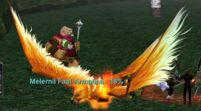
Melernil Faal`Armanna fight info:
- 600K HP
- Hits 2300+
- Slowable
- Rampage
- Flurry
- Casts Wave of White Noise (PBAE, Silence, Unresistable, 45 sec recast)
You’ll see the emote: Avatar of Mist shouts, ‘Leave now, foolish mortals! You have set in motion events that you cannot possibly understand!’
Spider Ring Event
It is recommended to fight in the tunnel rather than on the island for this event. Spiders hit pretty hard and can stun so it’s important not to have too many at once.
- Clear all the mobs on the island.
- When the last spider dies the event starts. Small level 50 spiders (an erratic arachnid) will continuously spawn until the end of the event. There is a max number of them – roughly 15. Enchanters will want to keep these AE mezzed until the end of the event. There is no point in killing them as they will just respawn.
- In the meantime the rest of the raid should be killing the a vorladien archwalker. They have approx. 180K HP each and can spin stun. archwalkers hit for 1300+. Everything is slowable.
- Kill one to spawn 3x a vorladien spawn. These hit 1400+ and HP range from 50K to 150K each.
- Kill 3x a vorladien spawn spawn the next a vorladien archwalker.
- Repeat this 3 times. After the 3rd round Sigismond Windwalker spawns under the rainbow. Kill it to spawn Avatar of Dust.
All the small adds that are being mezzed will then despawn.
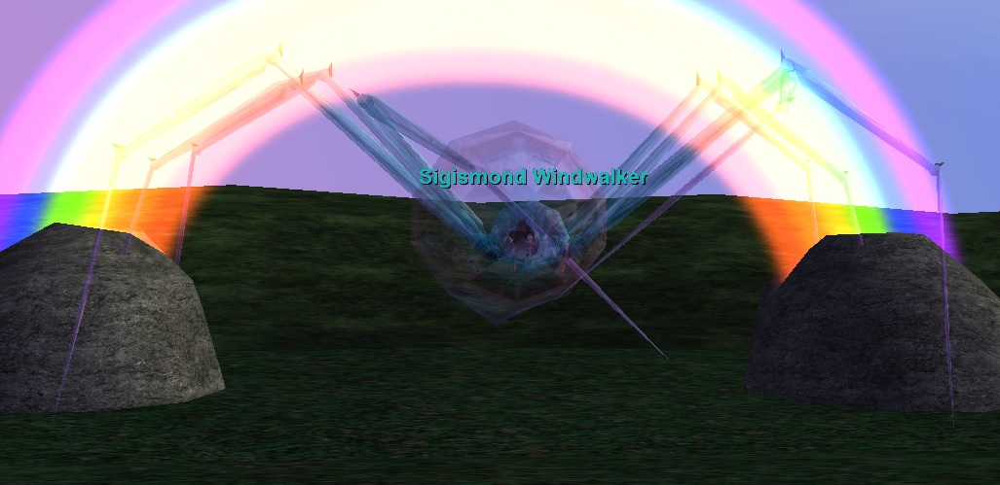
Sigismond Windwalker fight info:
- 650K HP
- Hits 2200+
- Slowable
- AE Rampage
- Flurries (rare)
- Casts Wave of White Noise (PBAE, Silence, Unresistable, 45 sec recast)
- Casts Air Strike (Single, 3850 DD, Unresistable, 30 sec recast)
You’ll see the emote: Avatar of Dust shouts, ‘Elements of Air and Dust, I call upon you to aid me in the defense of this land!’
The Avatars
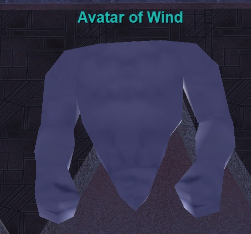
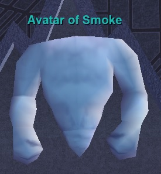
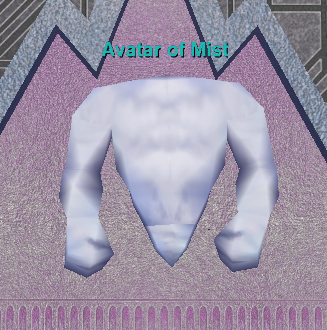
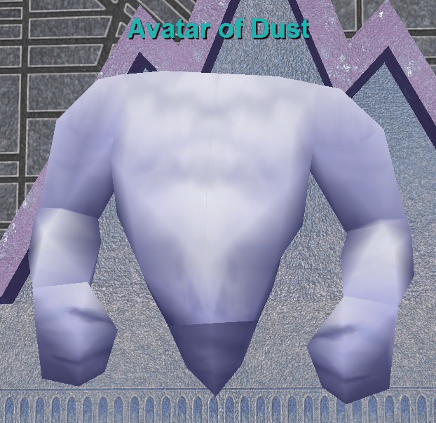
Avatar of Wind
- Hits 2400+
- Slowable
- 800K HP
- Rampages
- Flurries
- AE Rampages
- Casts Cyclone (Single Target, 95% Aggro reduction/200 DoT/.5 sec stune, -150 Magic Based)
- Casts Tornado (Single Target, 200 DoT/.5 sec stun, -100 Magic Based)
- Casts Lure of the Storm (PBAE, Dispel/800 DD/7.5 sec stun, -250 Magic Based)
Avatar of Smoke
- Hits 2400+
- Slowable
- 800K HP
- AE Rampages
- Flurries
- Casts Cyclone (Single Target, 95% Aggro reduction/200 DoT/.5 sec stun, -150 Magic Based)
- Casts Tornado (Single Target, 200 DoT/.5 sec stun, -100 Magic Based)
- Casts Hail Storm (PBAE, 400 DD/1 sec stun, Magic Based)
Avatar of Mist
- Hits 2400+
- Slowable
- 800K HP
- AE Rampages
- Flurries
- Casts Cyclone (Single Target, 95% Aggro reduction/200 DoT/.5 sec stun, -150 Magic Based)
- Casts Tornado (Single Target, 200 DoT/.5 sec stun, -100 Magic Based)
- Casts Stone Gale (Targeted AE, 1650 DD/2 sec stun, Unresistable)
Avatar of Dust
- Hits 2400+
- Slowable
- 800K HP
- AE Rampages
- Flurries
- Casts Wave of White Noise (PBAE, Silence, Unresistable, 45 sec recast)
Wind Etched Key
Key to Xegony’s Island
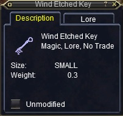
This key allows you to click the rainbow up to Xegony’s Island in Plane of Air. One person can port their entire group (up to 6 people).
Doing this quest requires that you be flagged for the Elemental Planes via the flagging progression system. If you are not, you won’t be able to receive the bag required to do the key combine because the NPC who gives it will not speak to you.
You need to obtain 5 items:
- Pouch of Swirling Winds
- Mystical Essence of Wind
- Mystical Essence of Smoke
- Mystical Essence of Mist
- Mystical Essence of Dust
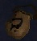
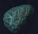
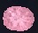
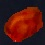
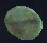
Combine all 4 Mystical Essences into the Pouch of Swirling Winds to receive Wind Etched Key.
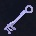
Pouch of Swirling Winds
Say “Plane of Air” to Sarhya the Dawnbreeze to receive Pouch of Swirling Winds. You must be Elemental flagged to receive this bag. Sarhya the Dawnbreeze is located at the Plane of Air zone in Plane of Tranquility.
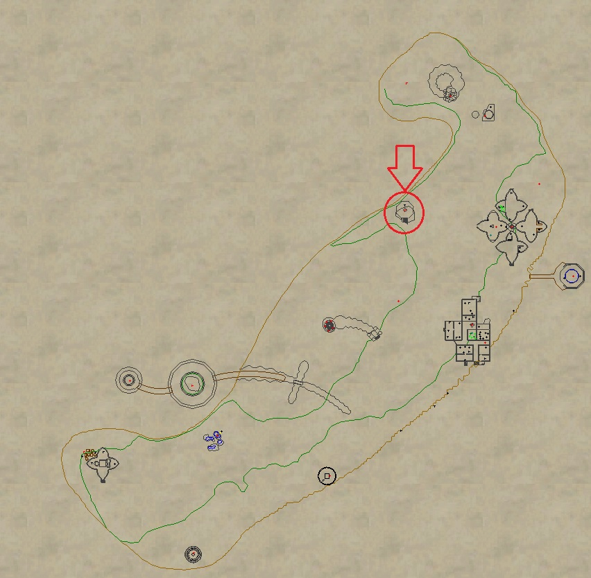
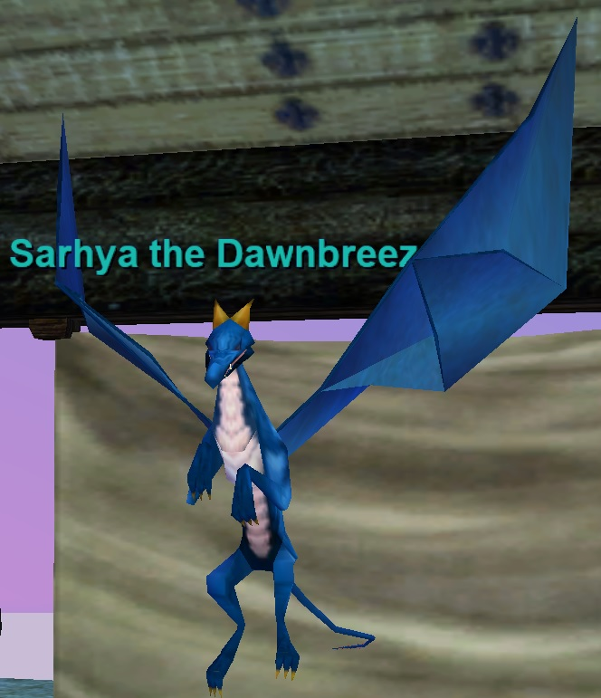
Mystical Essences
The Mysical Essences drop from various Wing Bosses called the Avatar’s. You must first complete a ring event to spawn each Avatar. The Avatar’s are triggered from the corresponding ring:
- Mystical Essence of Wind – Stormrider Ring Event – Spawns Avatar of Wind
- Mystical Essence of Smoke – Elemental Ring Event – Spawns Avatar of Smoke
- Mystical Essence of Mist – Phoenix Ring Event – Spawns Avatar of Mist
- Mystical Essence of Dust – Spider Ring Event – Spawns Avatar of Dust
Below is a map of where each is located:
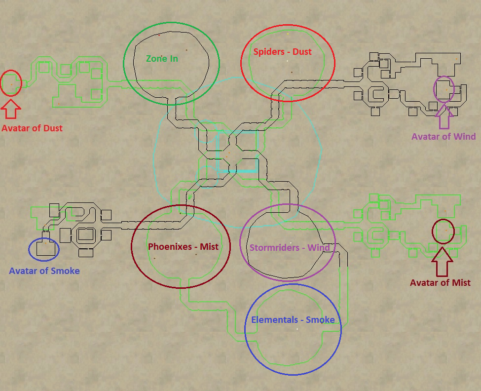
Xegony
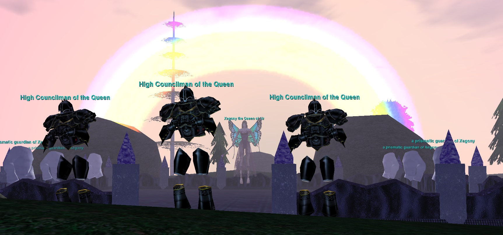
Zoning up to the Island
When you first zone up to the island, the giant bug mob Muzlakh the Chosen will be there to meet you as you zone in. He casts an AE snare and hits fairly hard. Be ready to kill him when you click up on the rainbow.
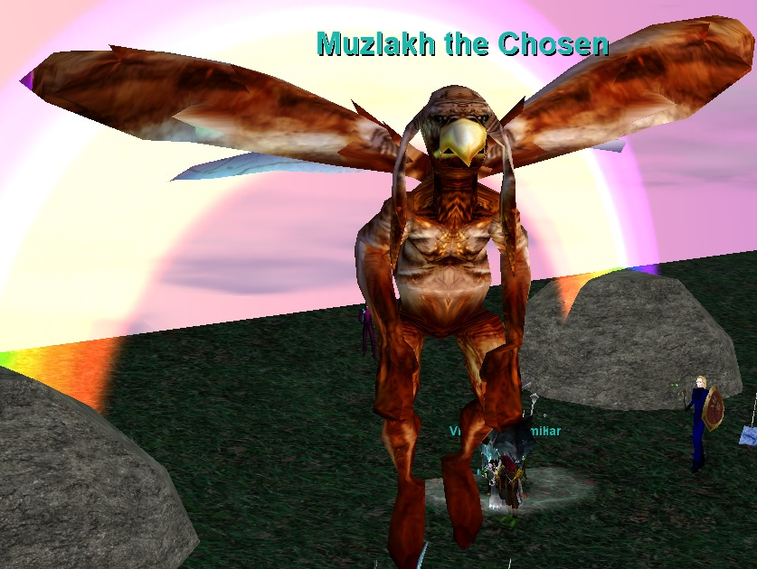
Fight Overview
The Xegony encounter involves killing 6 waves of adds while having to tank Xegony simultaneously. Every 15% or so a new wave will spawn. You will want to park your raid behind Xegony to stay away from where the adds spawn durnig the event. See map below to show where your raid should be parked and where each wave of adds spawns.
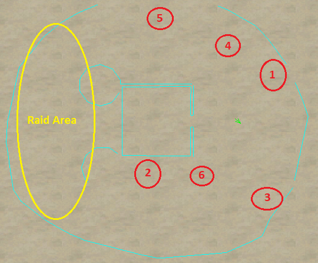
Part 1 – Trash
To be safe, first clear all the trash (High Councilmen and Elementals) within her “room”. Some splitting might be necessary but they are pretty easy to split out. The Elementals memblur and the Councilmen cast a slow.
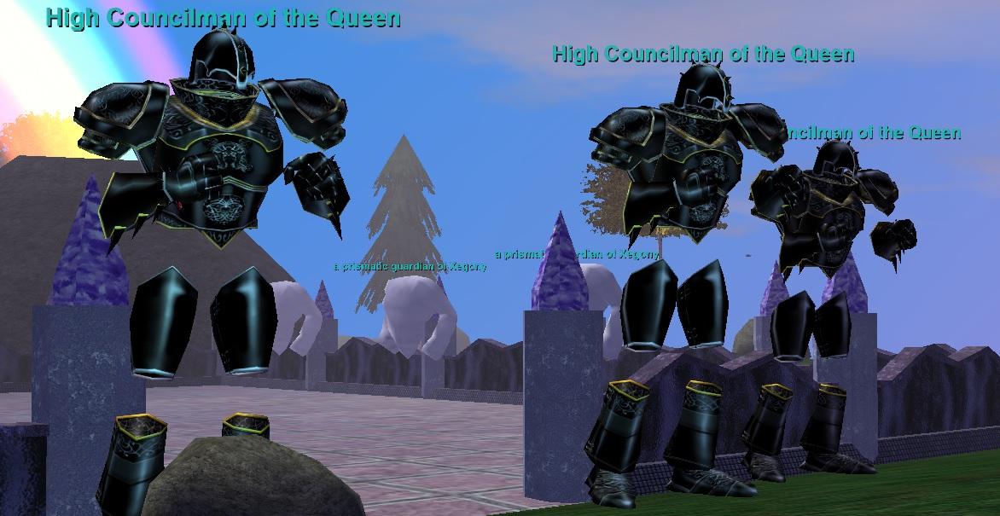
Part 2 – Setting up for the fight
Once her room is clear you are ready to begin the event. Your main tank will want to tank Xegony a decent distance from the raid because she casts the AE Wing of Xegony: 30% melee slow, 200 point DoT, and 1000 DD upon cast. It has a range of 125.
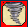
She doesn’t hit super hard but a CH chain is recommended since this is a long fight. Depending on how geared your tank and clerics are you may want up to 4 or 5 clerics in rotation. She is slowable so make sure to keep that up as well. Everyone who isn’t healing the Main tank will be killing or kiting adds.
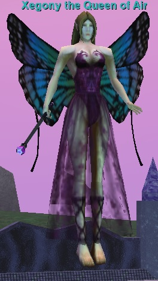
Part 3 – The Event
Once you start attacking Xegony, waves of adds will come every 15% HP (Roughly upon engage, 85%, 70%, 55%, 40%, and 25% HP) There are 6 waves total. The general strategy is to swap to the adds and kill them then go back to Xegony, do another 15% HP until the next wave spawns. Rinse and repeat until all waves are defeated and Xegony is dead. You will want to have a kite team ready to engage adds so they do not rush the tank or the rest of the raid upon spawning. Most if not all of the the waves adds are mezzable so bring enchanters if you are under geared or in era.
Note: The waves can spawn in different orders.
Wave 1 – Iron Knights Named: Rindaler Egulrtan – Casts AE Slience (125 range, 45 sec recast)
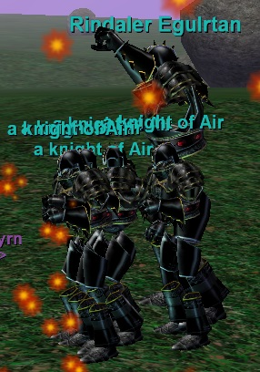
Wave 2 – SpidersNamed: Huridaf Vorgaasna – Casts AE Slience (125 range, 45 sec recast)
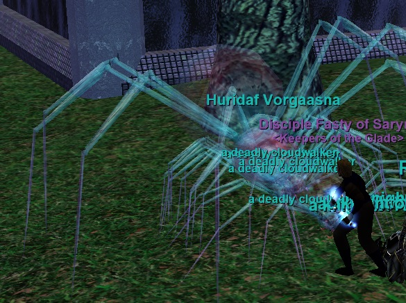
Wave 3 – Elementals Named: an elemental arbitor – Casts Targeted AE Slow (55%) and 1250 DD
Wave 4 – Bugs Named: Wesreh Galleantan – Casts Targeted AE Slow (55%) and 1250 DD
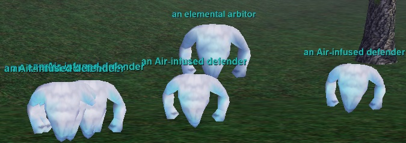
Wave 5 – Efreeti’s Named: Nuquernal Belegrodian – Casts AE Slience (125 range, 45 sec recast)
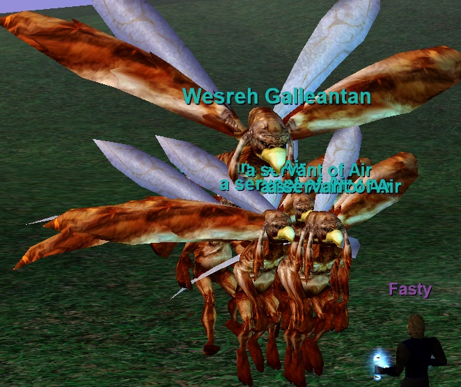
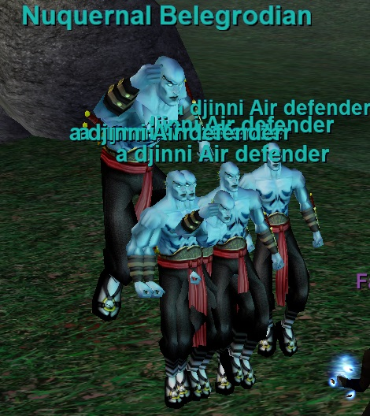
Wave 6 – Phoenixes Named: Weruis Herfadban – Casts Targeted AE Slow (55%) and 1250 DD
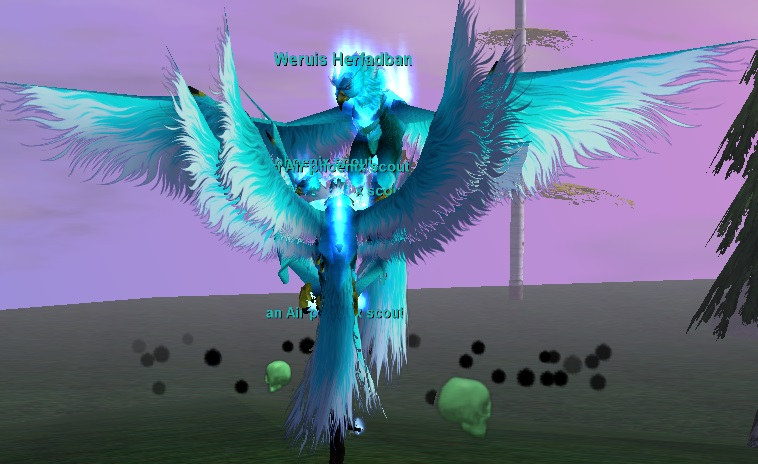
| Level | 80 |
|---|---|
| HP | 1,500,000 |
| Hits | 612 - 2440 |
| Resistances | MR 100 / CR 90 / FR 90 / DR 60 / PR 60 |
| Special Abilities | Summon, Enrage, Area Rampage, Double Attack, Dual Wield, Do Not Equip, Magical Attack, Unmezzable, Uncharmable, Unstunable, Unsnarable, Unfearable, Immune to fleeing, Immune to melee except magical, Immune to lull effects, Always Calls for Help, NO LOITERING |
| Can Cast | Wind of Xegony |
Cross-referenced from pqdi.cc (Project Quarm Database Interface)
Sources: eqprogression.com guide pages — Plane of Air Mini Boss/Ring Event Guide, Wind Etched Key – Key to Xegony’s Island, and Xegony the Queen of Air Strategy Guide; pqdi.cc for boss statistics (Baltaldor the Cursed, Xegony the Queen of Air). Videos embedded from YouTube.